Feynman diagrams
Introduction
This help article explores LaTeX packages for drawing Feynman diagrams, a very compact and intuitive way of representing interactions between particles. We'll explore the tikz-feynman package, which uses TikZ to draw diagrams, and feynmp-auto which ("behind the scenes") uses MetaPost.
The TikZ-Feynman package
The tikz-feynman package was published in 2016 and uses TikZ in order to generate Feynman diagrams. TikZ-Feynman builds upon the TikZ package and its graph drawing algorithms in order to automate the placement of many vertices. TikZ-Feynman still allows fine-tuned placement of vertices so that even complex diagrams can be generated with ease. The most up-to-date information for TikZ-Feynman will always be on the project page and in the package documentation on CTAN.
Update (9 November 2022)
IMPORTANT post-publication update (9 November 2022): At the time of updating this page, the TikZ-Feynman package remains incompatible with TeX Live versions later than TeX Live 2018—which is the TeX Live version used in the Overleaf project accompanying this help article.
All TikZ-Feynman examples listed below will need to be compiled in an Overleaf project with the TeX Live version set to 2018 (legacy). For further information see this issue reported on GitHub.
Loading the Package
After installing the package, the TikZ-Feynman package can be loaded with \usepackage{tikz-feynman} in the preamble. It is recommend that you also specify the version of TikZ-Feynman to use with the compat package option: \usepackage[compat=1.0.0]{tikz-feynman}. This ensures that any new versions of TikZ-Feynman do not produce any undesirable changes without warning.
A First Diagram
Feynman diagrams can be declared with the \feynmandiagram command. It is analogous to the \tikz command from TikZ and requires a final semi-colon (;) to finish the environment. For example, a simple s-channel diagram is:
\feynmandiagram [horizontal=a to b] {
i1 -- [fermion] a -- [fermion] i2,
a -- [photon] b,
f1 -- [fermion] b -- [fermion] f2,
};
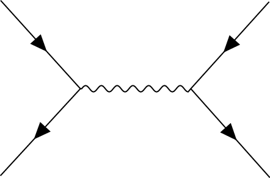
Let's go through this example line by line:
- Line 1
\feynmandiagramintroduces the Feynman diagram and allows for optional arguments to be given in the brackets[<options>]. In this instance,horizontal=a to borients the algorithm outputs such that the line through verticesaandbis horizontal.- Line 2
- The left fermion line is drawn by declaring three vertices (
i1,aandi2) and connecting them with edges--. Just like the\feynmandiagramcommand above, each edge also take optional arguments specified in brackets[<options>]. In this instance, we want these edges to have arrows to indicate that they are fermion lines, so we add thefermionstyle to them. As you will see later on, optional arguments can also be given to the vertices in exactly the same way. - Line 3
- This edge connects vertices
aandbwith an edge styled as a photon. Since there is already a vertex labelleda, the algorithm will connect it to a new vertex labeledb. - Line 4
- This line is analogous to line 2 and introduces two new vertices,
f1andf2. It re-uses the previously labelledbvertex. - Line 5
- Finish the declaration of the Feynman diagram. The final semi-colon (
;) is important.
The name given to each vertex in the graph does not matter. So in this example, i1, i2 denote the initial particles; f1, f2 denotes the final particles; and a, b are the end points of the propagator. The only important aspect is that what we called a in line 2 is also a in line 3 so that the underlying algorithm treats them as the same vertex.
The order in which vertices are declared does not matter as the default algorithm re-arranges everything. For example, one might prefer to draw the fermion lines all at once, as with the following example (note also that the way we named vertices is completely different):
\feynmandiagram [horizontal=f2 to f3] {
f1 -- [fermion] f2 -- [fermion] f3 -- [fermion] f4,
f2 -- [photon] p1,
f3 -- [photon] p2,
};
As a final remark, the calculation of where vertices should be placed is usually done through an algorithm written in Lua. As a result, LuaTeX is required in order to make use of these algorithms. If LuaTeX is not used, TikZ-Feynman will default to a more rudimentary algorithm and will warn the user instead.
Adding Styles
So far, the examples have only used the photon and fermion styles. The TikZ-Feynman package comes with quite a few extra styles for edges and vertices which are all documented over in the package documentation. For example, it is possible to add momentum arrows with momentum=<text>, and in the case of end vertices, the particle can be labelled with particle=<text>. To demonstrate how they are used, we take the generic s-channel diagram from earlier and make it a electron-positron pairs annihilating into muons:
\feynmandiagram [horizontal=a to b] {
i1 [particle=\(e^{-}\)] -- [fermion] a -- [fermion] i2 [particle=\(e^{+}\)],
a -- [photon, edge label=\(\gamma\), momentum'=\(k\)] b,
f1 [particle=\(\mu^{+}\)] -- [fermion] b -- [fermion] f2 [particle=\(\mu^{-}\)],
};
In addition to the style keys documented below, style keys from TikZ can be used as well:
\feynmandiagram [horizontal=a to b] {
i1 [particle=\(e^{-}\)] -- [fermion, very thick] a -- [fermion, opacity=0.2] i2 [particle=\(e^{+}\)],
a -- [red, photon, edge label=\(\gamma\), momentum'={[arrow style=red]\(k\)}] b,
f1 [particle=\(\mu^{+}\)] -- [fermion, opacity=0.2] b -- [fermion, very thick] f2 [particle=\(\mu^{-}\)],
};
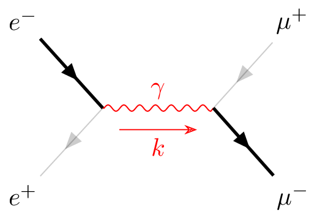
For a list of all the various styles that TikZ provides, have a look at the TikZ manual; it is extremely thorough and provides many usage examples.
When the Algorithm Isn't Enough
By default, the \feynmandiagram and \diagram commands use the spring layout algorithm to place all the edges. The spring layout algorithm attempts to `spread out' the diagram as much as possible which—for most simpler diagrams—gives a satisfactory result; however in some cases, this does not produce the best diagram and this section will look at alternatives. There are three main alternatives:
- Add invisible edges
- While still using the default algorithm, it is possible to force certain vertices to be closer together by adding extra edges and making them invisible through
draw=none. The algorithm will treat these extra edges in the same way, but they are simply not drawn at the end; - Use a different algorithm
- In some circumstances, other algorithms may be better suited. Some of the other graph layout algorithms are listed in the package documentation, and an exhaustive list of all algorithms and their parameters is given in the TikZ manual;
- Manual placement
- As a last resort, very complicated or unusual diagrams will require each vertex to be manually placed.
Invisible Edges
The underlying algorithm treats all edges in exactly the same way when calculating where to place all the vertices, and the actual drawing of the diagram (after the placements have been calculated) is done separately. Consequently, it is possible to add edges to the algorithm, but prevent them from being drawn by adding draw=none to the edge style.
This is particularly useful if you want to ensure that the initial or final states remain closer together than they would have otherwise as illustrated in the following example (note that opacity=0.2 is used instead of draw=none to illustrate where exactly the edge is located).
% No invisible to keep the two photons together
\feynmandiagram [small, horizontal=a to t1] {
a [particle=\(\pi^{0}\)] -- [scalar] t1 -- t2 -- t3 -- t1,
t2 -- [photon] p1 [particle=\(\gamma\)],
t3 -- [photon] p2 [particle=\(\gamma\)],
};
% Invisible edge ensures photons are parallel
\feynmandiagram [small, horizontal=a to t1] {
a [particle=\(\pi^{0}\)] -- [scalar] t1 -- t2 -- t3 -- t1,
t2 -- [photon] p1 [particle=\(\gamma\)],
t3 -- [photon] p2 [particle=\(\gamma\)],
p1 -- [opacity=0.2] p2,
};
Alternative Algorithms
The graph drawing library from TikZ has several different algorithms to position the vertices. By default, \diagram and \feynmandiagram use the spring layout algorithm to place the vertices. The spring layout attempts to spread everything out as much as possible which, in most cases, gives a nice diagram; however, there are certain cases where this does not work. A good example where the spring layout doesn't work are decays where we have the decaying particle on the left and all the daughter particles on the right.
% Using the default spring layout
\feynmandiagram [horizontal=a to b] {
a [particle=\(\mu^{-}\)] -- [fermion] b -- [fermion] f1 [particle=\(\nu_{\mu}\)],
b -- [boson, edge label=\(W^{-}\)] c,
f2 [particle=\(\overline \nu_{e}\)] -- [fermion] c -- [fermion] f3 [particle=\(e^{-}\)],
};
% Using the layered layout
\feynmandiagram [layered layout, horizontal=a to b] {
a [particle=\(\mu^{-}\)] -- [fermion] b -- [fermion] f1 [particle=\(\nu_{\mu}\)],
b -- [boson, edge label'=\(W^{-}\)] c,
c -- [anti fermion] f2 [particle=\(\overline \nu_{e}\)],
c -- [fermion] f3 [particle=\(e^{-}\)],
};
You may notice that in addition to adding the layered layout style to \feynmandiagram, we also changed the order in which we specify the vertices. This is because the layered layout algorithm does pay attention to the order in which vertices are declared (unlike the default spring layout); as a result, c--f2, c--f3 has a different meaning to f2--c--f3. In the former case, f2 and f3 are both on the layer below c as desired; whilst the latter case places f2 on the layer above c (that, the same layer as where the W-boson originates).
Manual Placement
In more complicated diagrams, it is quite likely that none of the algorithms work, no matter how many invisible edges are added. In such cases, the vertices have to be placed manually. TikZ-Feynman allows for vertices to be manually placed by using the \vertex command.
The \vertex command is available only within the feynman environment (which itself is only available inside a tikzpicture). The feynman environment loads all the relevant styles from TikZ-Feynman and declares additional TikZ-Feynman-specific commands such as \vertex and \diagram. This is inspired from PGFPlots and its use of the axis environment.
The \vertex command is very much analogous to the \node command from TikZ, with the notable exception that the vertex contents are optional; that is, you need not have {<text>} at the end. In the case where {} is specified, the vertex automatically is given the particle style, and otherwise it is a usual (zero-sized) vertex.
To specify where the vertices go, it is possible to give explicit coordinates though it is probably easiest to use the positioning library from TikZ which allows vertices to be placed relative to existing vertices. By using relative placements, it is possible to easily tweak one part of the graph and everything will adjust accordingly—the alternative being to manually adjust the coordinates of every affected vertex.
Finally, once all the vertices have been specified, the \diagram* command is used to specify all the edges. This works in much the same way as \diagram (and also \feynmandiagram), except that it uses an very basic algorithm to place new nodes and allows existing (named) nodes to be included. In order to refer to an existing node, the node must be given in parentheses.
This whole process of specifying the nodes and then drawing the edges between them is shown below for the muon decay:
\begin{tikzpicture}
\begin{feynman}
\vertex (a) {\(\mu^{-}\)};
\vertex [right=of a] (b);
\vertex [above right=of b] (f1) {\(\nu_{\mu}\)};
\vertex [below right=of b] (c);
\vertex [above right=of c] (f2) {\(\overline \nu_{e}\)};
\vertex [below right=of c] (f3) {\(e^{-}\)};
\diagram* {
(a) -- [fermion] (b) -- [fermion] (f1),
(b) -- [boson, edge label'=\(W^{-}\)] (c),
(c) -- [anti fermion] (f2),
(c) -- [fermion] (f3),
};
\end{feynman}
\end{tikzpicture}
Other packages for drawing Feynman diagrams
There are several alternatives to the TikZ-Feynman package:
feynmf: produces bitmap graphics via MetaFontfeynmp(bundled withfeynmf) produces vector graphics via MetaPostfeynmp-auto: derived fromfeynmp
The feynmp-auto package is, in effect, an extension of the feynmp package designed to automate the conversion of MetaPost's PostScript code to PDF data for use in pdfTeX, LuaTeX and XeTeX. The following examples all use feynmp-auto.
Introduction
The feynmf, feynmp and feynmp-auto packages let you easily draw Feynman diagrams by specifying the vertices, particles and their labels, then automatically performing the layout to draw your diagram.
An overview of using the feynmf-based packages
To create Feynman diagrams you need to:
- create an
fmfileenvironment to contain one or more diagrams, each enclosed within anfmfgraphorfmfgraph*environment—the difference between the starred and non-starred form is explained below; - use each
fmfgraphorfmfgraph*environment to contain the drawing instructions required to create an individual Feynman diagram.
The fmfile environment has the following form
\begin{fmffile}{file-name}
% Diagram 1
\begin{fmfgraph}(width,height)
...
\end{fmfgraph}
% Diagram 2
\begin{fmfgraph*}(width,height)
...
\end{fmfgraph*}
\end{fmffile}
where file-name is the name of a file that will be used to contain the MetaPost code descriptions of the individual drawings defined within fmfgraph/fmfgraph* environments.
Each drawing takes the form
\begin{fmfgraph}(width,height)
% drawing instructions
\end{fmfgraph}
or, for the starred version (fmfgraph*)
\begin{fmfgraph*}(width,height)
% drawing instructions
\end{fmfgraph*}
where (width,height) defines the size of the diagram expressed in units of \unitlength.
The MetaPost code in file-name is processed to create the graphic(s) representing your Feynman diagram(s). An fmfile environment can contain up to 256 individual drawings.
fmfgraph and fmfgraph*
fmfgraph: this environment contains the drawing instructions (description) of a single Feynman diagram. It will be placed at the location of the environment. This environment does not support labels, usefmfgraph*to include labels in your diagrams.fmfgraph*same asfmfgraph, but enclosed in apictureenvironment of the same size. It supports the use of LaTeX labels.
An example
Let's start with a quick example:
\documentclass{article}
\usepackage{feynmp-auto}
\begin{document}
\begin{fmffile}{first-diagram}
\begin{fmfgraph}(120,80)
\fmfleft{i1,i2}
\fmfright{o1,o2}
\fmf{fermion}{i1,v1,o1}
\fmf{fermion}{i2,v2,o2}
\fmf{photon}{v1,v2}
\end{fmfgraph}
\end{fmffile}
\end{document}
This example produces the following output:

In this example the fmfgraph environment sets the drawing's width and height to 120 and 80 respectively:
\begin{fmfgraph}(120,80)
using units determined by the value of \unitlength, which has a default value of 1pt; consequently, this diagram is allocated a width of 120pt and a height of 80pt.
Note on \unitlength
Because \unitlength is a LaTeX dimension you can change its value using the \setlength command; for example, to define the width and height of drawings in units of cm you can write:
\setlength{\unitlength}{1cm}
Reproducing the example above, the diagram below now has a width of 8cm and height of 5cm:
\documentclass{article}
\usepackage{feynmp-auto}
\begin{document}
\setlength{\unitlength}{1cm}
\begin{fmffile}{first-diagram}
\begin{fmfgraph}(8,5)% units are now in cm
\fmfleft{i1,i2}
\fmfright{o1,o2}
\fmf{fermion}{i1,v1,o1}
\fmf{fermion}{i2,v2,o2}
\fmf{photon}{v1,v2}
\end{fmfgraph}
\end{fmffile}
\end{document}
Open this example in Overleaf.
This example now produces a larger diagram:

Vertices
The first thing you need to do is specify your external vertices, and where they should be positioned. You can name your vertices anything you like, and say where they should be positioned with the commands \fmfleft, \fmfright, \fmftop, \fmfbottom.
As used in the examples above:
% Creates two vertices on the left called i1 and i2
\fmfleft{i1,i2}
% Creates two vertices on the right called o1 and o2
\fmfright{o1,o2}
You can connect vertices with the \fmf, which will create new vertices if you pass in names that haven't been created yet. Also as used in the examples above:
% Will create a fermion line between i1 and
% the newly created v1, and between v1 and o1.
\fmf{fermion}{i1,v1,o1}
% Will create a photon line between v1 and the newly created v2
\fmf{photon}{v1,v2}
Labels
As noted above, to use labels the drawing must be created using the fmfgraph* form of the drawing environment.
Use the \fmflabel command to place a label on a vertex:
\fmflabel{label-content}{diagram-vertex}
where:
label-contentis the label to apply to the chosen vertex;diagram-vertexis the name of the vertex to label.
Note that label-content can include mathematical material.
We can re-use the previous example to add the following labels
\fmflabel{$v_1$}{v1}
\fmflabel{$v_2$}{v2}
which produces the updated diagram shown below:
\documentclass{article}
\usepackage{feynmp-auto}
\begin{document}
\begin{fmffile}{first-diagram}
\begin{fmfgraph*}(120,80) %NOTE the fmfgraph* environment
\fmfleft{i1,i2}
\fmfright{o1,o2}
\fmf{fermion}{i1,v1,o1}
\fmf{fermion}{i2,v2,o2}
\fmf{photon}{v1,v2}
% Add our labels
\fmflabel{$v_1$}{v1}
\fmflabel{$v_2$}{v2}
\end{fmfgraph*}
\end{fmffile}
\end{document}
Open this example in Overleaf.
This example produces a Feynman diagram containing labels:

Some more complex examples
The following, more advanced, examples use features of feynmp that we have not discussed: see the feynmp package (feynmf) documentation—which also contains numerous additional examples. These diagrams were originally published in an Overleaf template containing LaTeX code reproduced from a CERN web page which is now only accessible via Wayback Machine—that page contains further examples you may wish to try.
Example 1
\documentclass{article}
\usepackage{feynmp-auto}
\begin{document}
\begin{fmffile}{complex-a}
\begin{fmfgraph*}(100,100)
\fmfleft{i1}
\fmfright{o1,o2}
\fmf{fermion,label=$u$}{i1,w1}
\fmf{fermion,label=$d$}{w1,o1}
\fmf{photon,label=$W^{+}$}{w1,o2}
\fmfv{lab=$V^{\ast}_{ud}$,lab.dist=0.05w}{w1}
\end{fmfgraph*}
\end{fmffile}
\end{document}
This example produces the following diagram:

Example 2
\documentclass{article}
\usepackage{feynmp-auto}
\begin{document}
\begin{fmffile}{complex-b}
\begin{fmfgraph*}(200,200)
% bottom and top verticies
\fmfstraight
\fmfleft{i0,i1,i2,id1,id2,i3,i4,i5}
\fmfright{o0,o1,o2,od1,od2,o3,o4,o5}
% incoming proton to gluon vertices
\fmf{fermion,label=$d$}{i1,o1}
% tension shifts vertex to one side
\fmf{fermion,tension=1.5,label=$\overline{b}$}{v2,i4}
\fmf{fermion,label=$\overline{c}$}{o4,v2}
\fmffreeze
\fmf{fermion}{o2,v3,o3}
\fmf{fermion,label=$\overline{s}$}{o2,v3}
\fmf{fermion,label=$c$}{v3,o3}
\fmf{photon, tension=2,label=$W^{+}$}{v2,v3}
% phantom centres the W->cs vertex
\fmf{phantom,tension=1.5}{i1,v3}
\fmfv{lab=$V_{cb}^{\ast}$}{v2}
\fmfv{lab=$V_{cs}$,lab.dist=-.1w}{v3}
\end{fmfgraph*}
\end{fmffile}
\end{document}
This example produces the following diagram:

Example 3
\documentclass{article}
\usepackage{feynmp-auto}
\begin{document}
\begin{fmffile}{complex-c}
\begin{fmfgraph*}(200,200)
%bottom and top verticies
\fmfbottom{P1,P2}
\fmftop{P1',b,bbar,P2'}
%incoming protons to gluon vertices
\fmf{fermion,tension=2,lab=$P_1$}{P1,g1}
\fmf{fermion,tension=2,lab=$P_2$}{P2,g2}
%blobs at gluon vertices, 0.16w is the size of blob
\fmfblob{.16w}{g1,g2}
%gluon from P1 to vertex1
\fmf{gluon,lab.side=right,lab=$x_{1}P_{1}$}{g1,v1}
%gluon from P2 to vertex2 - note change of order!
\fmf{gluon,lab.side=right,lab=$x_{2}P_{2}$}{v2,g2}
%quark loop was here
\fmf{fermion, tension=.6, lab.side=right,lab=$b$}{v1,b}
\fmf{fermion, tension=1.2}{v2,v1}
\fmf{fermion, tension=.6, lab.side=right,lab=$\overline{b}$}{bbar,v2}
%outgoing protons
\fmf{fermion}{g1,P1'}
\fmf{fermion}{g2,P2'}
%freeze everything in place
\fmffreeze
\renewcommand{\P}[3]{\fmfi{plain}{%
vpath(__#1,__#2) shifted (thick*(#3))}}
%lines on P1
\P{P1}{g1}{2,0}
\P{P1}{g1}{-2,1}
%lines on p2
\P{P2}{g2}{2,1}
\P{P2}{g2}{-2,0}
%lines on P1'
\P{g1}{P1'}{-2,-1}
\P{g1}{P1'}{2,0}
%lines on P2'
\P{g2}{P2'}{-2,0}
\P{g2}{P2'}{2,-1}
\end{fmfgraph*}
\end{fmffile}
\end{document}
This example produces the following diagram:

Line styles
We've seen the photon and fermion line styles above, but the feynmp package supports many more.
| Appearance | Name(s) |
|---|---|
| 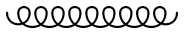 | gluon, curly |
| dbl_curly | |
| 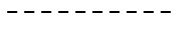 | dashes |
| 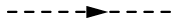 | scalar, dashes_arrow |
| 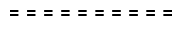 | dbl_dashes |
| 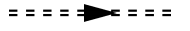 | dbl_dashes_arrow |
| dots | |
| ghost, dots_arrow | |
| dbl_dots | |
| dbl_dots_arrow | |
| phantom | |
| phantom_arrow | |
| 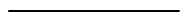 | vanilla, plain |
| 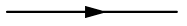 | fermion, electron, quark, plain_arrow |
| 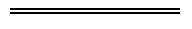 | double, dbl_plain |
| 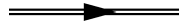 | double_arrow, heavy, dbl_plain_arrow |
| 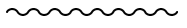 | boson, photon, wiggly |
| 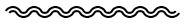 | dbl_wiggly |
| 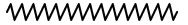 | zigzag |
| 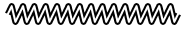 | dbl_zigzag |
Further Reading
For more information see:
Overleaf guides
- Creating a document in Overleaf
- Uploading a project
- Copying a project
- Creating a project from a template
- Using the Overleaf project menu
- Including images in Overleaf
- Exporting your work from Overleaf
- Working offline in Overleaf
- Using Track Changes in Overleaf
- Using bibliographies in Overleaf
- Sharing your work with others
- Using the History feature
- Debugging Compilation timeout errors
- How-to guides
- Guide to Overleaf’s premium features
LaTeX Basics
- Creating your first LaTeX document
- Choosing a LaTeX Compiler
- Paragraphs and new lines
- Bold, italics and underlining
- Lists
- Errors
Mathematics
- Mathematical expressions
- Subscripts and superscripts
- Brackets and Parentheses
- Matrices
- Fractions and Binomials
- Aligning equations
- Operators
- Spacing in math mode
- Integrals, sums and limits
- Display style in math mode
- List of Greek letters and math symbols
- Mathematical fonts
- Using the Symbol Palette in Overleaf
Figures and tables
- Inserting Images
- Tables
- Positioning Images and Tables
- Lists of Tables and Figures
- Drawing Diagrams Directly in LaTeX
- TikZ package
References and Citations
- Bibliography management with bibtex
- Bibliography management with natbib
- Bibliography management with biblatex
- Bibtex bibliography styles
- Natbib bibliography styles
- Natbib citation styles
- Biblatex bibliography styles
- Biblatex citation styles
Languages
- Multilingual typesetting on Overleaf using polyglossia and fontspec
- Multilingual typesetting on Overleaf using babel and fontspec
- International language support
- Quotations and quotation marks
- Arabic
- Chinese
- French
- German
- Greek
- Italian
- Japanese
- Korean
- Portuguese
- Russian
- Spanish
Document structure
- Sections and chapters
- Table of contents
- Cross referencing sections, equations and floats
- Indices
- Glossaries
- Nomenclatures
- Management in a large project
- Multi-file LaTeX projects
- Hyperlinks
Formatting
- Lengths in LaTeX
- Headers and footers
- Page numbering
- Paragraph formatting
- Line breaks and blank spaces
- Text alignment
- Page size and margins
- Single sided and double sided documents
- Multiple columns
- Counters
- Code listing
- Code Highlighting with minted
- Using colours in LaTeX
- Footnotes
- Margin notes
Fonts
Presentations
Commands
Field specific
- Theorems and proofs
- Chemistry formulae
- Feynman diagrams
- Molecular orbital diagrams
- Chess notation
- Knitting patterns
- CircuiTikz package
- Pgfplots package
- Typesetting exams in LaTeX
- Knitr
- Attribute Value Matrices
Class files
- Understanding packages and class files
- List of packages and class files
- Writing your own package
- Writing your own class